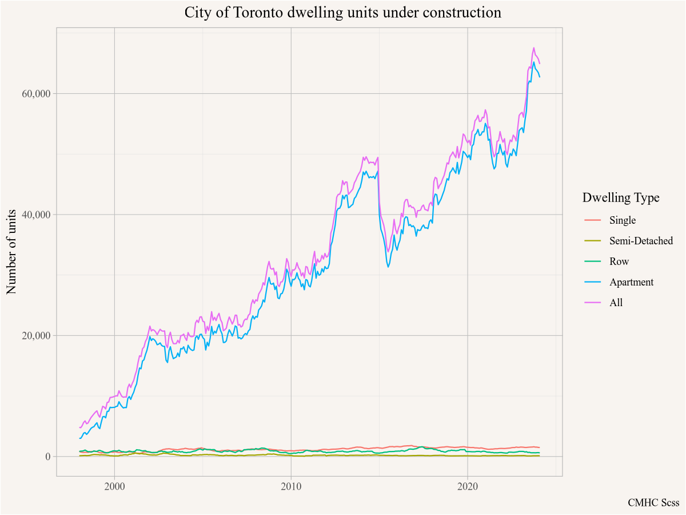
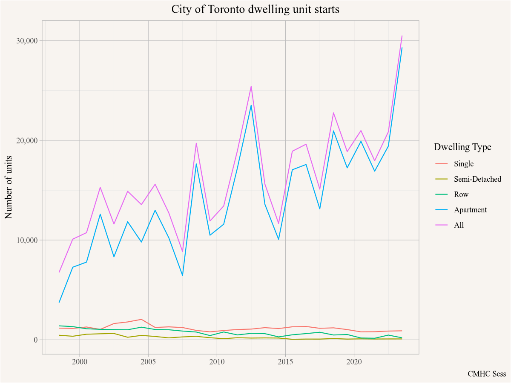
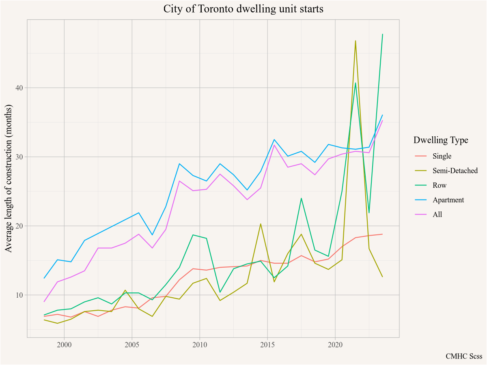

9 Under construction
Units under construction give some indication of construction activity beyond starts and completions.
9.1 Question
How many homes are currently under construction in Toronto?
9.2 Data sources
CMHC tracks information on housing starts and completions. And the number of homes under construction, that is dwelling units that have started but aren’t yet completed.
CMHC defines a housing “start” as the time when the foundation is finished, so digging a parking crater and building below ground happens before what CMHC calls a building “start”. This might differ from how one might colloquially think about units under construction, as there can be significant construction activity before a “start”. But this probably comes reasonably close to our question of interest.
9.3 Data acquisition
The cmhc package facilitates importing data from CMHC. This pries data out the Housing Market Information Portal where data is organized across a variety of tables. The easiest way to locate a table of interest is to use the select_cmhc_table() function from the cmhc package in the console to interactively step through the process. In our case, we are interested in data from the Starts and Completions Survey (Scss), look at the Under Construction series, after which we can select to have data broken down by Bedroom Type or Intended Market, where we select the former. Lastly we need to decide the breakdown type, either a level of geography or Historical Time Periods for a fixed geography, which is what we are interested in.
Going through this process gives us the code we need to access the data, all we need to do is fill in the geographic identifier. The cmhc package is designed to work in conjunction with other census data, so it uses the same geographic identifiers and translates them to CMHC’s own internal geographic identifiers under the hood. For Toronto, we need to decide if we are interested in the City of the metro area and grab the geographic identifier from the CensusMapper API tool. We will query data for the City of Toronto with standard StatCan geographic identifier “3520005” .
9.4 Data preparation
There is really not much to do here, let’s just inspect what the data looks like
Code
under_construction |> head()# A tibble: 6 × 7
GeoUID Date DateString `Dwelling Type` Value Survey Series
<chr> <date> <chr> <fct> <dbl> <chr> <chr>
1 3520005 1998-01-01 Jan 1998 Single 838 Scss Under Construction
2 3520005 1998-01-01 Jan 1998 Semi-Detached 132 Scss Under Construction
3 3520005 1998-01-01 Jan 1998 Row 838 Scss Under Construction
4 3520005 1998-01-01 Jan 1998 Apartment 3008 Scss Under Construction
5 3520005 1998-01-01 Jan 1998 All 4816 Scss Under Construction
6 3520005 1998-02-01 Feb 1998 Single 738 Scss Under Construction9.5 Analysis and visualization
What’s left is to plot the data, broken out by dwelling type.
Code

It looks like the number of units under construction, especially apartment units, has increased considerably over time. Let’s cross-check that against housing starts. These tend to be quite noisy, so we go to annual frequency instead of monthly. We can adapt the code above for data acquisition and graphing into one chunk.
Code
get_cmhc(survey = "Scss",
series = "Starts",
dimension = "Dwelling Type",
breakdown = "Historical Time Periods",
frequency = "Annual",
geo_uid = "3520005") |>
ggplot(aes(x=Date,y=Value,colour=`Dwelling Type`)) +
geom_line() +
scale_y_continuous(labels=scales::comma) +
labs(title="City of Toronto dwelling unit starts",
x=NULL,y="Number of units", caption="CMHC Scss")
Starts have increased, but not that much. Something else must be at play too, let’s look at how length of construction has changed over this timeframe, again using annual data to cut down on noise.
Code
get_cmhc(survey = "Scss",
series = "Length of Construction",
dimension = "Dwelling Type",
breakdown = "Historical Time Periods",
frequency = "Annual",
geo_uid = "3520005") |>
ggplot(aes(x=Date,y=Value,colour=`Dwelling Type`)) +
geom_line() +
scale_y_continuous(labels=scales::comma) +
labs(title="City of Toronto dwelling unit starts",
x=NULL,y="Average length of construction (months)",
caption="CMHC Scss")
And indeed, the length of construction shot up a lot, for apartments from around 13 months in the late 90s to about 30 months around 2020. That means we now have over twice as many construction sites for the same number of units coming to market compared to the late 90s.
The sharp increase in construction time for Semi-detached and row houses might well be a data anomaly, where low and dropping number of starts of such units can be disproportionally impacted by a couple of stalled projects.
9.6 Interpretation
The units under construction has increased a lot in the City of Toronto, due to the combined effects of increasing building starts as well as a more than doubling of average time to complete these units.